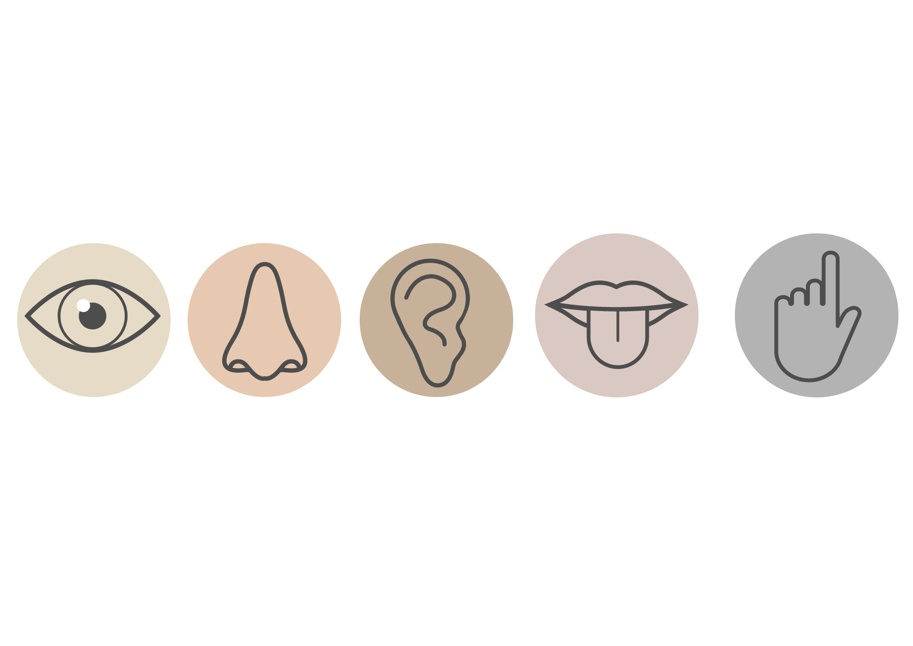

Discover Synaesthesia
Find out all you need to know about Synaesthesia.
What is Synaesthesia?

A condition which causes unusual sensory perceptions and cognitive experiences.
For example, visual input could trigger unrelated, distinct tastes.

Sound or music could elicit visual experiences such as colour and shapes.

Graphemes such as letters and numbers can invoke feelings or visual perceptions of colour or texture.
The thought of sequences such as days of the week, numbers or the alphabet could be experienced visually, either in the mind's eye or in physical space.
Synaesthesia is...
INVOLUNTARY
ADDITIVE
IDIOSYNCRATIC
CONSISTENT
Hover to learn more.
What causes Synaesthesia?

Synaesthetes have atypical patterns of connectivity in the brain. This can cause the parts of the brain responsible for the senses to "hyper-activate" when they receive particular sensory input.
There are certain gene variants responsible for causing Synaesthesia. Therefore, Synaesthesia often runs in families with these genetic differences.

A BRIEF HISTORY OF
SYNAESTHESIA
1812
The first known documented case of Synaesthesia appears in a doctural thesis by Georg Tobias Ludwich Sachs. Hover over the following image to reveal how Sachs saw letters and numbers:

Sachs also had colours for numbers:
→
0
"Pale Yellow"
1
"Definitely white"
2
"No distinct colour"
3
"Ash-grey"
4
"Vermilion"
5
"Yellow"
6
"Indigo"
7
"Bluish Grey"
8
"Brown"
9
"Dark Green"
1881
"Secondary Sensations"
Bleuler and Lehmann discovered 6 types of Synaesthesia:
1882 → 1892
The term "colour hearing" began circulating around the world to denote all forms of the phenomenon.
1892
"Synesthesia"
Frenchman Jules Antoine Millet is the first to use the term "synesthesia", for all kinds of combined senses.
